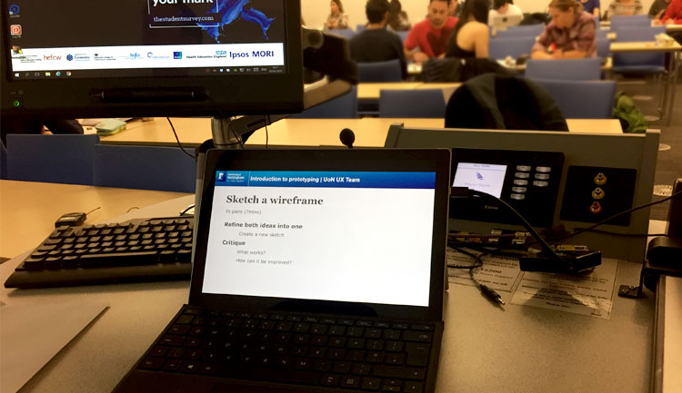
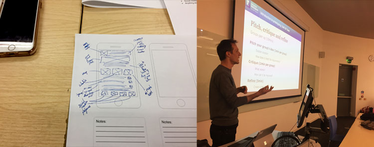
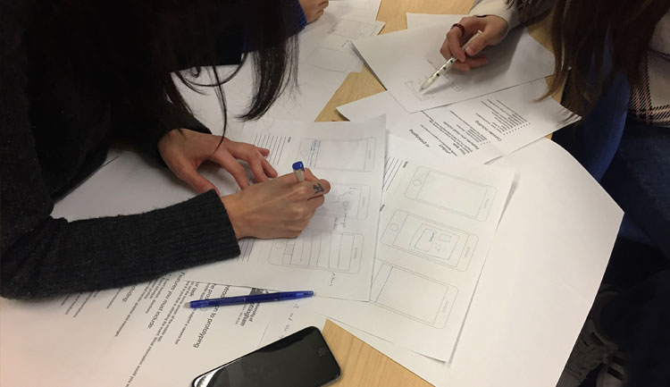
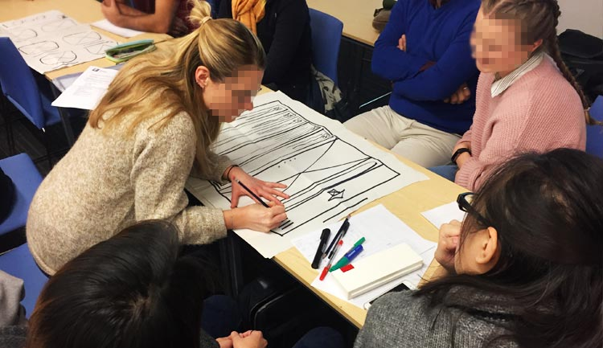

The UX team were recently invited by Professor Gary Burnett and Associate Professor Sue Cobb of the Human Factors Research Group, to co-host a lecture and workshop for over 70 Human Factors, Product Design, and Engineering students.
Students were introduced to sketching and rapid prototyping techniques through a series of practical activities to complement their studies.
A short presentation served as a backdrop to the session, including an introduction to the UX team and Information Services, an overview of current UX techniques, and a plan of activity developed by the UX team.

The MyNottingham app was used as the theme for the session, as it is familiar and relatable to students, with over 60% of the group having downloaded and currently using the app.
Students were split by tutor group, and asked to sketch ideas for a careers fair booking system for the app. This aligned with a University requirement for an events feature for the app, and is a current focus of work for the UX team and Information Services.
Students worked individually to sketch and iterate ideas then as groups, to pitch and critique each other's work to refine their concepts.

The students really enjoyed the session, with Sue Cobb commenting that it made a perfect complement to Prof. Burnett's lecture.
We got lots of useful ideas to feed into future development of the app, and some of the students asked after the session if they could join the UX team on placement!


Client: University of Nottingham Human Factors Research Group
Date: March 2018
Tag: user research, prototyping
"Several students afterwards told me how much they enjoyed it. They now seem to be using the learning in their coursework. In yesterday's practical session a couple of the groups were following the same process but with their own application areas to generate a wireframe prototype"
- Professor Gary Burnett
"Thanks again for running the workshop. It was extremely useful for our students. It's very important to us that they can see how the principles that we teach them are actually implemented in practice. It was also really nice for them to learn about the work that your team do as these are the types of jobs that some of them will be interested in. The workshop was great. They were very engaged in the activity and it was good for them to work on a real project example. Very valuable learning experience for the students."
- Associate Professor Sue Cobb